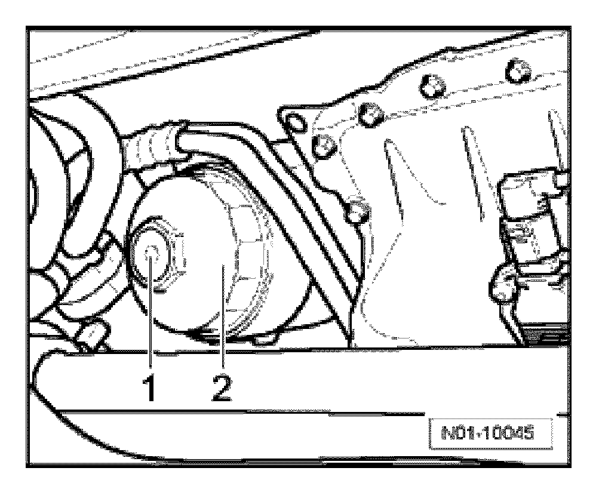
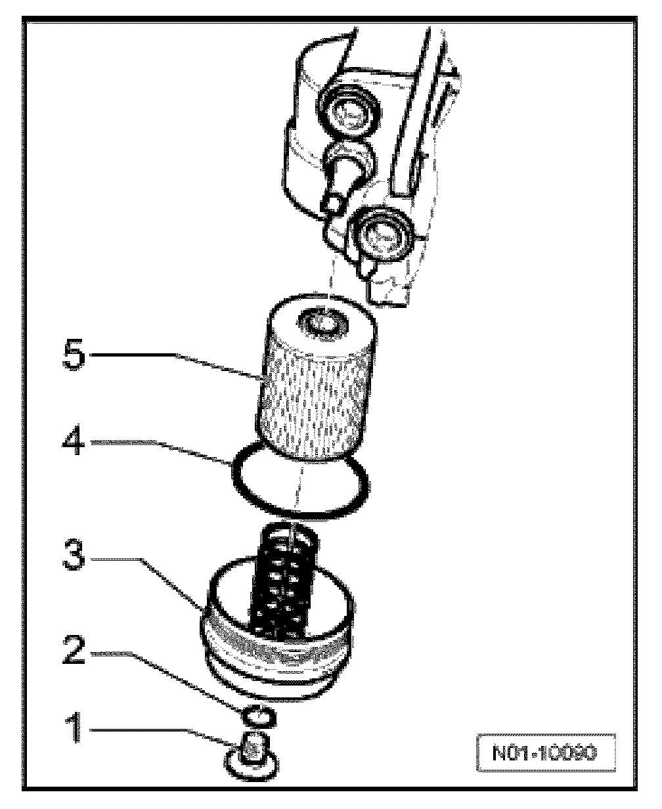
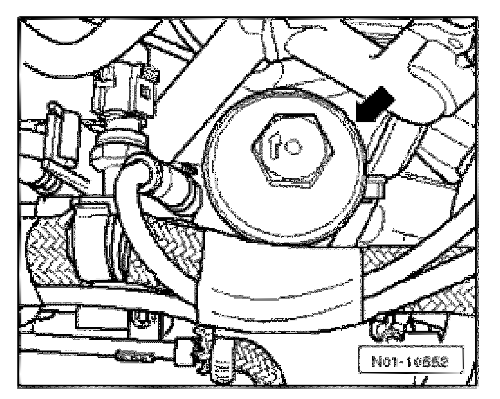
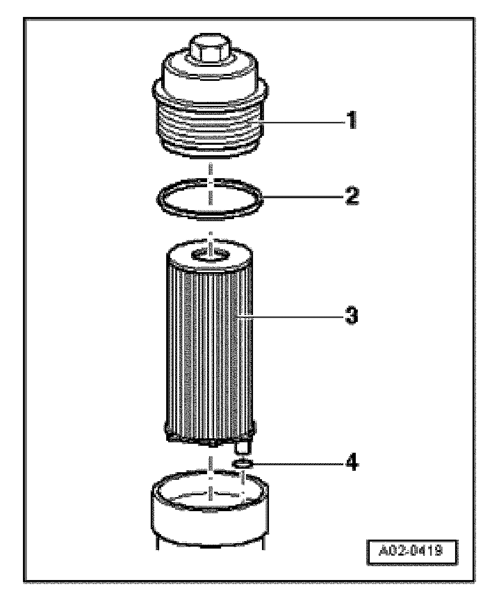
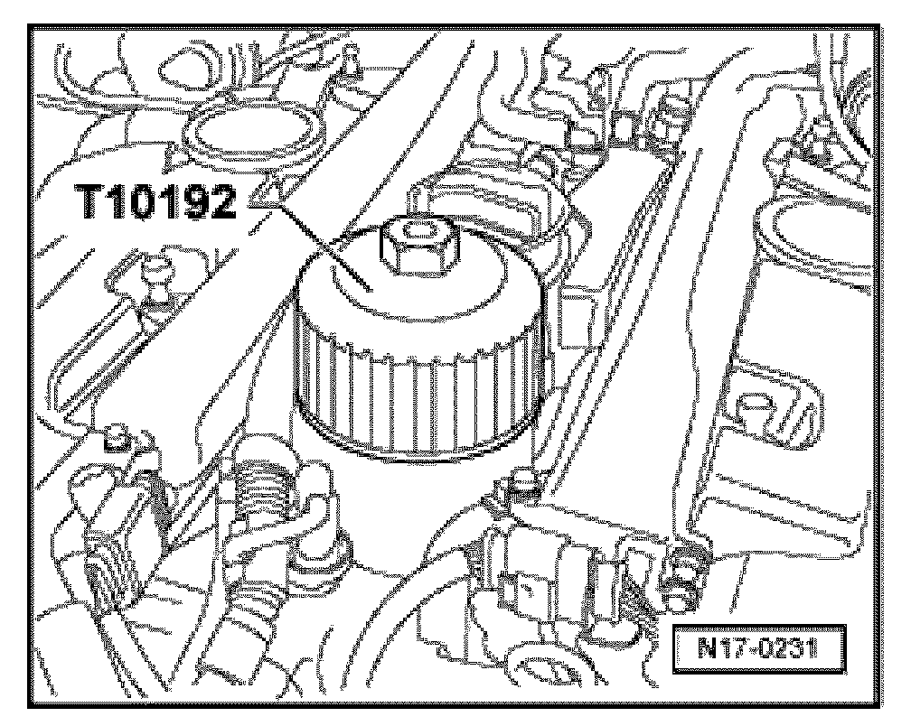
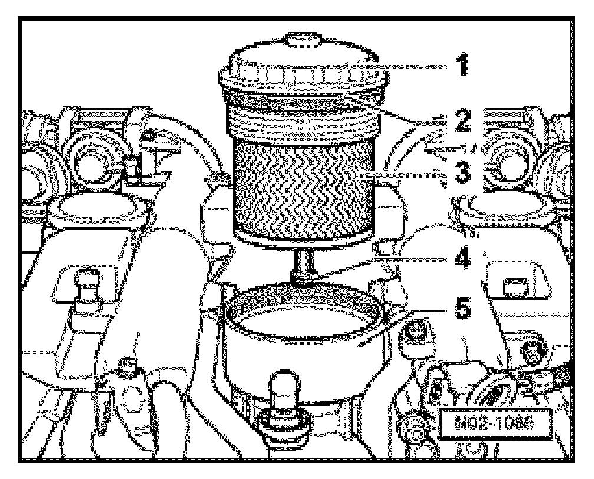
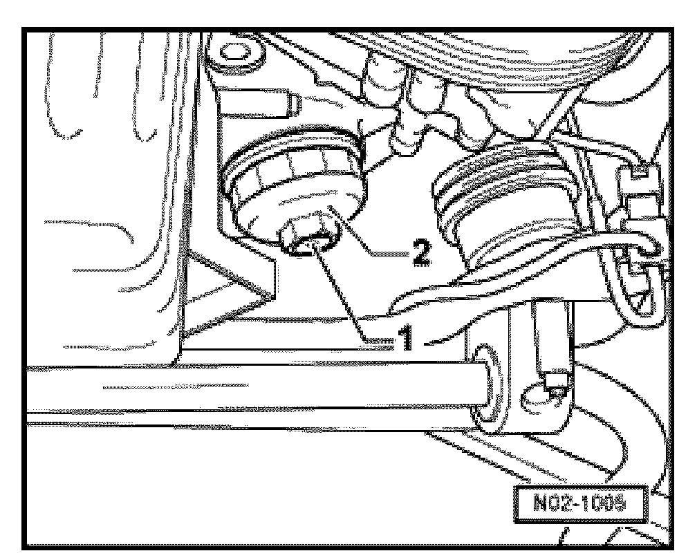
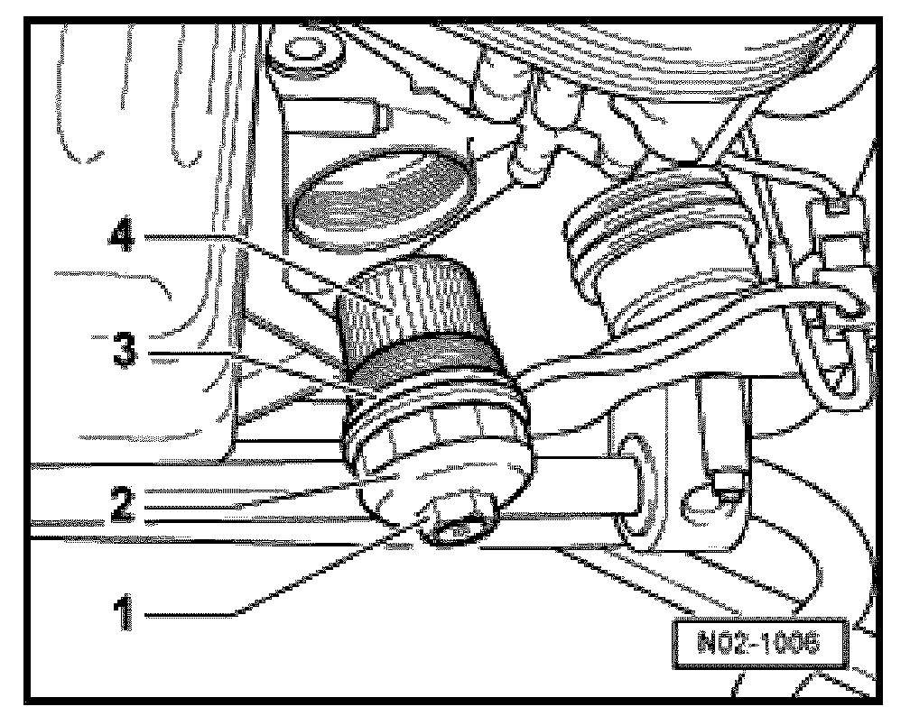

Oil Filter: Service and Repair
8-cyl. Gasoline engine with code AXQ/BHX
Removing

- Unscrew oil drain plug -1- or screw cap and drain oil.
- Loosen filter lower part -2- on hexagon -1- or on circumference and remove.

- Clean sealing surfaces at cap and at oil filter housing.
- Install oil filter -5-.
Installing
- Install cap -3- with new O-ring -4- and tighten to 25 Nm.
- Install new sealing ring -2- for oil drain plug -1- and tighten to 10 Nm
8-cyl. Gasoline engine with engine code BAR
Removing
- Remove upper engine cover. Service and Repair
- Cover area surrounding oil filter cover, e.g. with Oil absorbent cloth VAS 6204/1.

- Loosen the sealing cap -arrow- using a socket wrench 32 mm.
- Remove the sealing cap together with oil filter element.

- Separate the oil filter element -3- from the sealing cap -1-.
- Clean sealing surfaces at cap and at oil filter housing.
Installing
- Replace the oil filter element -3-.
- Install sealing cap -1- with new O-rings -2- and -4- and tighten to 35 Nm.
- Installation is reverse of removal.
10-cyl Diesel engine
Removing
- Remove upper engine cover. Service and Repair
- Cover engine with a cloth.

- Unscrew oil filter housing cap from filter housing using tool T10192.
- Clean sealing surfaces at cap at oil filter housing.

- Install oil filter -3-
Installing
- Install cap -1- with new O-rings -2- and -4- and tighten to 25 Nm
6-cyl Gasoline engine
Removing

- Unscrew oil drain plug -1- of screw cap and drain oil.
- Loosen filter lower part -2- on hexagon -1- or on circumference and remove.
- Clean sealing surfaces at cap and at oil filter housing.
Installing

- Replace the filter element -4- and the seal -3-.
- Install cap -2- with new O-ring and tighten to 25 Nm
- Install oil drain plug -1- with new seal and tighten to 10 Nm.